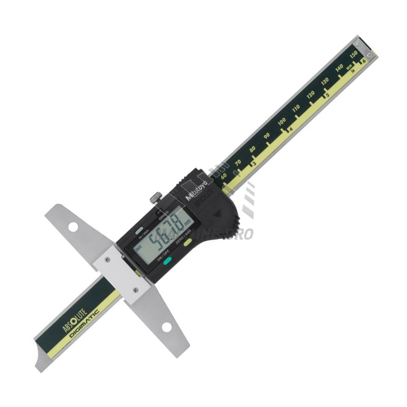

L.C. 0.001 & 0.01 mm
Range up to 300 mm
L.C. 0.001 & 0.01 mm
Range up to 300 mm
L.C. 0.01 mm
Range up to 600 mm
L.C. 0.01 , 0.001 mm
Range up to 100 mm
L.C. 0.01 , 0.02 , 0.05 mm
Range up to 600 mm
L.C. 0.1 mm
Range up to 50 mm
Range up to 100 mm
L.C. 0.01 , 0.02 , 0.05 mm
Range up to 600 mm
L.C. 0.01 , 0.02 , 0.05 mm
Range up to 300 mm

L.C. 0.001 , 0.01 , 0.1 mm
Range up to 25 mm
L.C. 0.001 , 0.002 , 0.01 mm
Range up to 2 mm
Transmission up to 2 mm

L.C. 0.0002 mm
Range up to 25 mm
L.C. 0.0001 mm
Range up to 25 mm
Range up to 600 mm
Range up to 150 mm
L.C. 0.01 mm
Range up to 30 mm